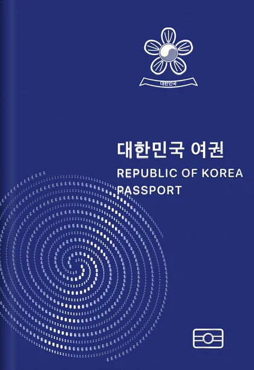
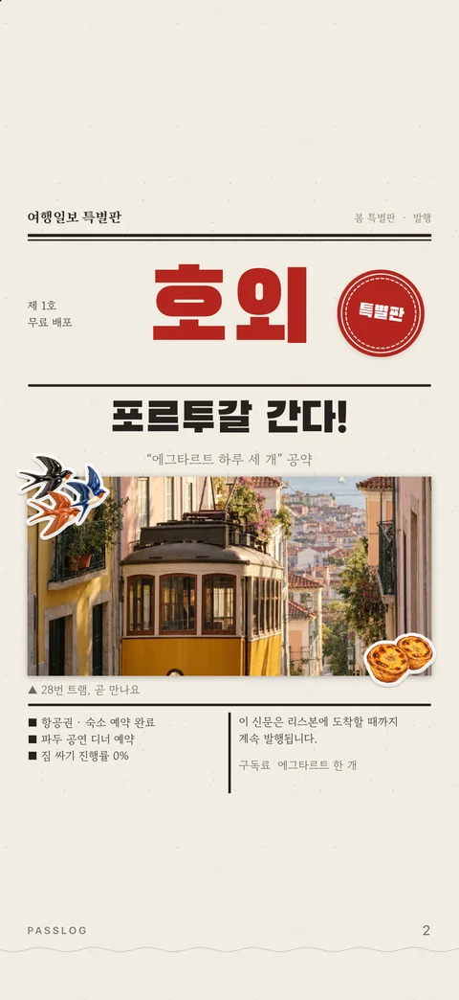
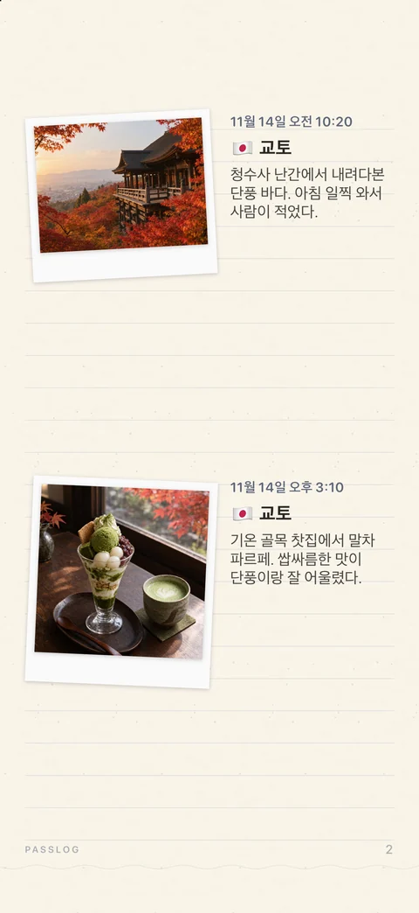
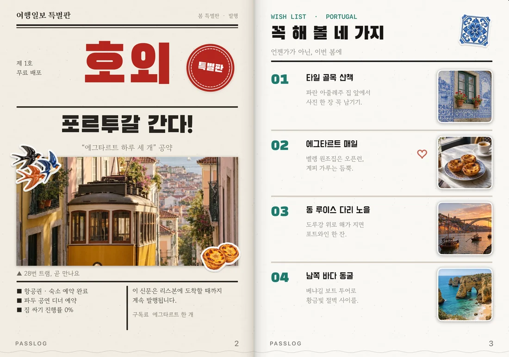
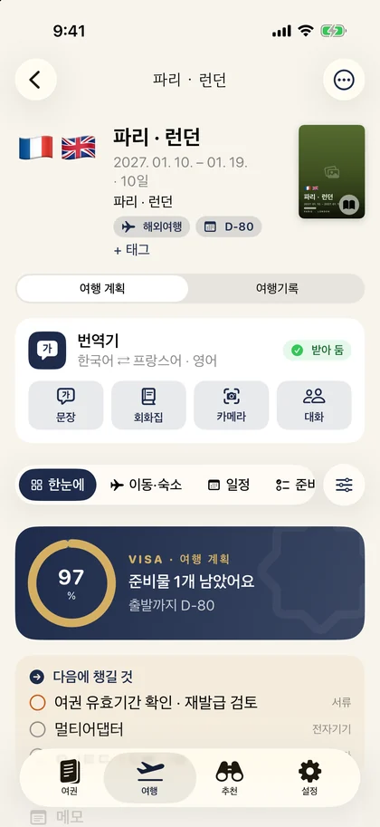

A JOURNEY, KEPT.
여행을 한 권의
여권처럼.
떠나기 전의 설렘부터 돌아온 뒤의 추억까지.
사진과 스티커, 손글씨로
나만의 여행 책을 만드세요.
iPhone · iPad · iPhone Duo 회원가입 없이 시작


소중한 순간이 쌓이는, 나만의 여권.YOUR STORY, YOUR PAGES
한 장의 사진이
한 권의 이야기가 되도록.
사진첩 속 여행에, 그날의 이야기를 더해보세요.

다녀온 곳을,
내 이야기로.
사진의 날짜와 장소로 지난 여행을 찾고,
도착한 도시에는 방문 도장을 남겨보세요.
스티커 하나에도
나의 취향을.
템플릿을 고르고 사진을 넣고.
스티커와 손글씨로 나만의 페이지를 완성하세요.
아이패드에서는 Apple Pencil도 사용할 수 있어요.
A PASSPORT THAT OPENS TO YOUR WORLD
접으면 여권.
펼치면, 두 쪽의 여행.
아이폰에서는 한 쪽씩, 아이패드와 듀오에서는 두 쪽 펼침면으로.
내 기기에 맞는 모습으로 여행을 간직하세요.

BEFORE YOU GO
기록의 시작은,
떠나기 전부터.
여행 준비물과 일정을 비자 페이지처럼 정리하세요.
여행지 정보와 추천도 함께 살펴볼 수 있어요.
- 준비물 체크리스트와 준비율
- 일정 · 날씨 · 시차 · 환율
- 기간과 취향에 맞춘 여행지 추천

A FEW THINGS TO KNOW
시작하기 전에.
무료로 사용할 수 있나요?
무료로 다운로드할 수 있습니다. 일부 스티커 팩 열기, 워터마크 제거 등은 원할 때 보는 보상형 광고로 이용할 수 있습니다. 자세한 이용 조건은 앱에서 확인해 주세요.
회원가입이 필요한가요?
회원가입 없이 시작할 수 있습니다. 여행 기록은 기기와 내 iCloud에 저장됩니다. 광고 서비스의 데이터 처리에 관한 내용은 개인정보처리방침에서 확인할 수 있습니다.
어떤 기기에서 사용할 수 있나요?
아이폰·아이패드·아이폰 듀오에서 사용할 수 있습니다. 현재 App Store에는 iOS 26.0 이상이 필요한 것으로 안내되어 있습니다. 다운로드 전에 내 기기의 호환 정보를 확인해 주세요.
어떤 언어를 지원하나요?
한국어, 영어, 일본어를 지원합니다.